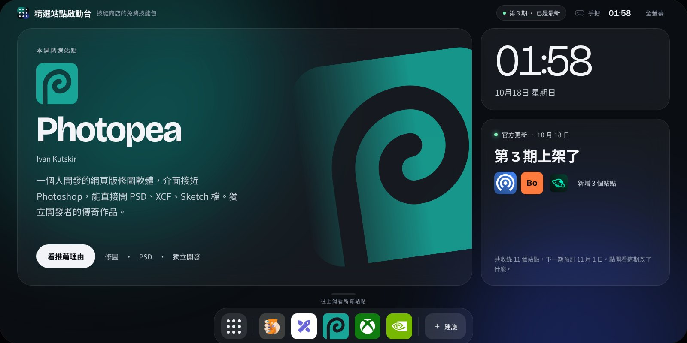

KitLab 商店 › 免費工具 › 精選站點啟動台
好站點，
一點就開。
我們挑出值得收藏的 PWA 與雲遊戲站點，做成車機風的全螢幕啟動台。每個站點都附推薦理由，按一下就到官方網站。
免費不用登入
啟動
官方持續更新中
提供者 KitLab 官方 官方技能包

在 Safari 點下方的「分享」，再選「加入主畫面」，就能像 App 一樣開啟。
每期官方更新
精選收錄的站點
兩週一期新站點上架，打不開的下架
0 筆資料不用登入，不收集任何資料
怎麼用
跟車機一樣，打開就能用。電腦、手機、平板都是同一個畫面。
打開啟動台
首頁是本週精選、時鐘和這一期的更新內容。
往上滑看所有站點
所有站點排成一格一格，左右滑換頁，也能直接搜尋。
看理由，再出發
每個站點都有推薦理由，按「前往官方網站」就在新分頁打開。
常用的放進 Dock
在站點頁按「加到 Dock」，下次打開就在最下面。
接上手把也能用：十字鍵移動、A 確認、B 返回、Y 打開所有站點。
你不用整理，
我們幫你挑好。
一般的收藏站要你自己滑、自己比較、自己整理我的最愛。這台啟動台反過來：站點由官方挑選、寫介紹、定期巡檢，你打開就是最新版。
你唯一需要決定的，是哪幾個要放在自己的 Dock 上。
常見問題
真的完全免費嗎？
是。啟動台是 KitLab 商店的免費技能包，不用登入，也沒有付費功能。
可以自己加站點嗎？
不行，這是刻意的。站點由官方挑選和維護，這樣每一個都值得點。你想推薦的站點，按啟動台 Dock 上的「建議」告訴我們。
怎麼裝成 App？
用 Chrome 或 Edge 打開啟動台，網址列會出現安裝圖示；iPhone 用 Safari 的「分享」→「加入主畫面」。裝好後是全螢幕的橫向畫面。
雲遊戲需要另外付費嗎？
要看各平台。啟動台只負責介紹和連結，帳號、訂閱與付費都在各平台的官方網站處理。
現在就開來看看
推薦站點或回報問題，也可以直接加 LINE 告訴我們。
LINE ID：xin883xin